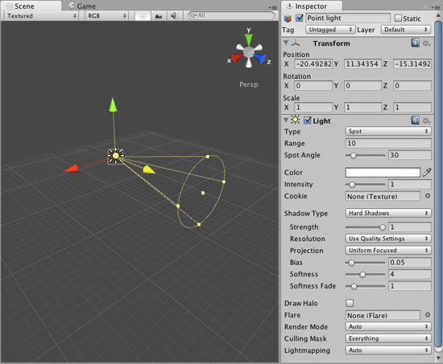
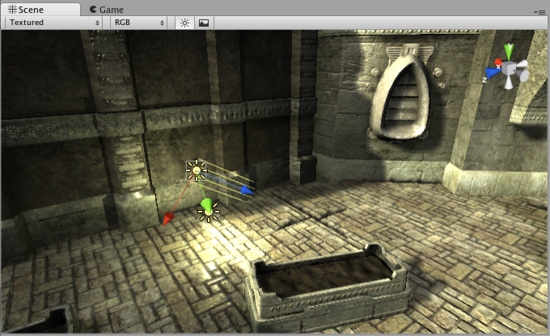

Lights
Lights are an essential part of every scene. While meshes and textures define the shape and look of a scene, lights define the color and mood of your 3D environment. You'll likely work with more than one light in each scene. Making them work together requires a little practice but the results can be quite amazing.

A simple, two-light setup
Lights can be added to your scene from the menu. Once a light has been added, you can manipulate it like any other GameObject. Additionally, you can add a Light Component to any selected GameObject by using .
There are many different options within the Light Component in the Inspector.

Light Component properties in the Inspector
By simply changing the Color of a light, you can give a whole different mood to the scene.

Bright, sunny lights

Dark, medieval lights

Spooky night lights
The lights you create this way are realtime lights - their lighting is calculated each frame while the game is running. If you know the light will not change, you can make your game faster and look much better by using Lightmapping.
Rendering paths
Unity supports different Rendering Paths, these paths affect mainly Lights and Shadows, so choosing the correct rendering path depending on your game requirements can improve your project's performance. For more info about rendering paths you can visit the Rendering paths section.
More information
For more information about using Lights, check the Lights page in the Reference Manual.
Page last updated: 2011-10-24